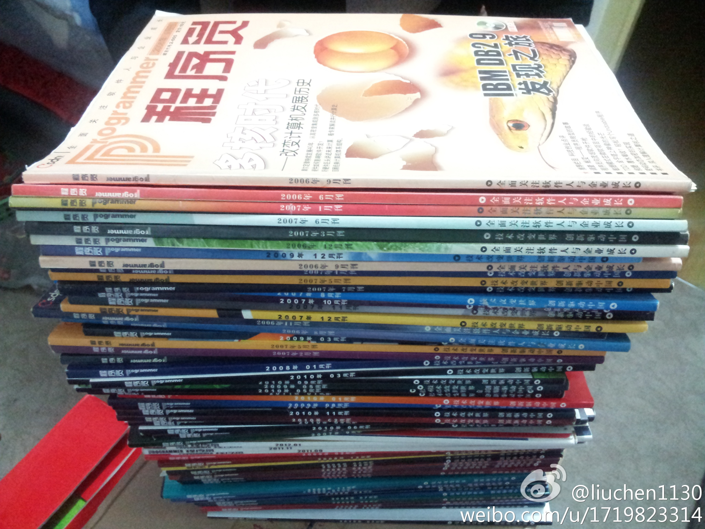
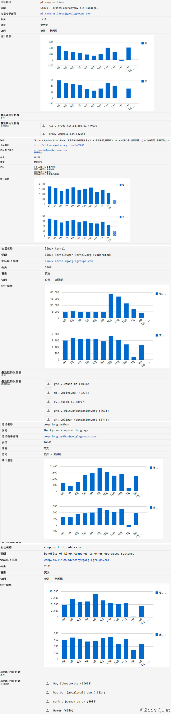

这段话一发再发，不断被引用。//@林正刚:转发微博@新东方Anya:企业领导就像一个大齿轮，大齿轮小动一下，作为小齿轮的员工就要飞快地转。所以领导说话要小心，要负责任，不要一分钟一个主意，不然员工就会被累死！---＜正能量＞林正刚
谁把照片借我？从来不攒杂志，现在想要礼品...//@程序员杂志: 秀出你手中的《程序员》（数量在24本及以上），并拍照发微博@程序员读者服务部，均有礼品赠送@liuchen1130:昨天收拾屋子，翻出了部分《程序员》杂志，也算见证了这几年的发展之路，今年打算订个pad电子版了，有优惠没？哈哈。。。@蒋涛CSDN 
今天开了CSDN论坛改版需求会，我主要旁听，觉得这个论坛产品真是复杂，积分系统复杂，界面复杂，运营管理也复杂，毕竟这是已经有十几年历史的社区产品了。但要改动，阻力更大，很多论坛老人不喜欢改动。之前改版调了亮度，据说就引来吐槽一片。
人数少的话，很多事情都好办。你见过人数最多的mailing list有多少人，参与讨论的活跃者有多少？//@ZoomQuiet: #是也乎#BBS 搞积分基本是最脑残的功能设计,mailling list/IRC 从来不算分,但是,谁说的靠谱,大家都知道,,,@Ada李力:今天开了CSDN论坛改版需求会，我主要旁听，觉得这个论坛产品真是复杂，积分系统复杂，界面复杂，运营管理也复杂，毕竟这是已经有十几年历史的社区产品了。但要改动，阻力更大，很多论坛老人不喜欢改动。之前改版调了亮度，据说就引来吐槽一片。
MARK.@ZoomQuiet:#邮件列表#才是技术世界的根本,不算早年mailman发布的,随便找几个:CPyUG 23015个主题;comp.lang.python 128523个主题;pl.comp.os.linux178948 个主题;comp.os.linux.advocacy 162682 个主题;linux.kernel 261586 个主题... @Ada李力 BBS真心从来都是玩的... 
国内的邮件列表使用者很小众，这是事实。//@蒋涛CSDN: 参考csdn bbs早期发展和stackoverflow的发展，积分反馈机制是非常有效的，这也是游戏风靡世界的主要特征。没有积分排行，玩游戏乐趣少一大半。 //@Ada李力:MARK.@ZoomQuiet:#邮件列表#才是技术世界的根本,不算早年mailman发布的,随便找几个:CPyUG 23015个主题;comp.lang.python 128523个主题;pl.comp.os.linux178948 个主题;comp.os.linux.advocacy 162682 个主题;linux.kernel 261586 个主题... @Ada李力 BBS真心从来都是玩的...
刚过去的三八节，几乎媒体都做了女性人物采访和报导。@孟迎霞 老师还问过我社区有无推荐，运营人员反馈说有那么一两个，很低调，不愿接受采访。我自己私下也并不喜欢这种以性别做分类的方式，所以对此也不是太积极。
最近加入了一个将近90人的CTO群, 除我之外，清一色男性，而我还不是以CTO身份加入的，有些懊恼，因为CTO还是我曾经计划的职业目标。但，这种现象也改变了我刻意抹杀性别的一贯想法，是应该多花些时间和精力鼓励更多女性从事技术行业。
今天接到电话找人，一要找iOS开发的培训师。我心想，不太好找，这行太抢手。二要求学历博士，我心想，硕士学历的iOS培训师，估计都自己创业当CEO了，博士做移动开发？少见。三要教一学期的课，每周一次。真正一线开发人员就不适合了，估计也就是教师堆里扒了。需求古怪，还说薪资面谈。没戏。
说说职业规划，我上中学时想当教授，报考大学志愿时填的工业设计，但最后去了工科院校，大学时觉得目标是总工。但毕业后做了两年高校教师，发现不适合做老师，还是软件开发有意思。在软件行业时目标也在变化，想做经理，想做技术大牛，想做CTO•••而我现在干的是社区运营。
听过这种说法，夫妻感情好的标志是两人能说很多话，年龄越大越需要这样。以前会觉得哪里有那么多话讲，真要讲那么多，估计都是废话。但后来明白，你认为的废话，别人也许认为有用。扯谈，通常就是把有用的话和没用的话都堆到一起。